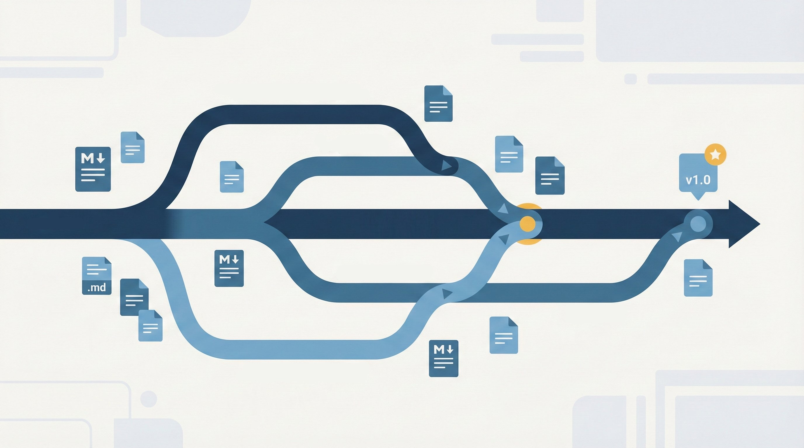

Git hygiene for technical writers
Day one survival guide
A former colleague reached out last night: "Any tips for someone starting a job that does docs as code?" That first week in a Git-based documentation environment can feel overwhelming. Branches everywhere, merge conflicts appearing out of nowhere, and that nagging feeling you're about to break something important.
Here's what I learned through trial, error, and years of working with teams at AWS who'd been doing this far longer than I had.

Start with a cheat sheet, keep it forever
The single best thing I did, and kept doing until my last day, was maintain a Git cheat sheet. Not a generic one from the internet. Your cheat sheet, with the exact commands you use in your specific environment.
Keep it open constantly. Update it every time you discover a better way to do something. You'll reference it daily at first, then weekly, then occasionally, but you'll never stop finding it useful.
Here's a starter template:
# DAILY SETUP
cd ~/projects/docs
git fetch --all --prune
git pull origin main
# STARTING NEW WORK
git checkout main
git pull origin main
git checkout -b js-descriptive-name
# WORKING ON FEATURE BRANCH
git add .
git commit -m "[TICKET-123] Brief description of change"
git push origin js-branch-name
# SYNCING YOUR BRANCH WITH LATEST MAIN
git checkout js-your-branch
git fetch origin main
git merge origin/main
# resolve any conflicts, then:
git add .
git commit -m "Merge main into feature branch"
# AFTER PR IS MERGED
git checkout main
git pull origin main
git branch -d js-merged-branch
git push origin --delete js-merged-branch
# OH SHIT COMMANDS
git reflog # Find lost commits
git stash # Quick-save changes
git stash pop # Restore stashed changes
git reset --hard origin/main # Nuclear option - start over
git log --oneline --graph # Visualize historyAutomate your morning routine
Identify the commands you type every single morning and put them in a script.
Mine looked like this:
cd ~/cloud-desktop
bash daily.shThat script handled authentication, workspace sync, and pulling changes from remote. Five minutes of setup work that saved me from forgetting critical steps every morning. You can find a sample script here.
The five rules of Git hygiene
These practices came from years of collective experience across our teams at AWS. Some learned from writers who'd been doing docs-as-code for decades, others from painful mistakes we made along the way. We documented them on our team wiki as onboarding material. New hires could read them before their first commit. We reinforced them in team meetings and 1-on-1s. Eventually, they became part of org-wide standardization.
They also prevent disasters.
1. Never commit directly to main
Always work on feature branches. Main should only receive changes through merged pull requests that have been reviewed.
This single rule prevents most catastrophic mistakes.
2. Pull frequently, push infrequently
Always be pulling from remote and merging into your feature branches. Do this at least weekly for idle branches. Do it throughout the day for active work.
The more often you pull and merge, the less likely you are to face massive conflicts.
Why this matters: I once worked with a writer who let branches go stale for weeks. When merge conflicts appeared, they'd panic and blindly accept their changes over everyone else's. They deleted entire pages of content written by other team members. We worked extensively to build better habits, but when the same data loss happened again months later, we had to part ways.
3. Resolve conflicts carefully
When you see conflict markers in your file, stop and think:
<<<<<<< HEAD (your changes)
Configure IAM roles before enabling encryption.
=======
Enable encryption first, then configure IAM roles.
>>>>>>> main (their changes)Don't just delete one side. Ask yourself:
- What was I trying to accomplish?
- What were they trying to accomplish?
- Which version is technically correct?
- Do both changes need to coexist somehow?
When in doubt, talk to the other writer before resolving the conflict. Five minutes of conversation prevents hours of recovery work.
After resolving conflicts manually in your editor:
git add .
git commit -m "Resolve merge conflict in security-setup.md"4. Follow the pull request workflow
The typical docs-as-code workflow looks like this:
Create your feature branch:
git checkout main
git pull origin main
git checkout -b js-new-featureDo your work, commit frequently:
git add .
git commit -m "[DOC-1234] Add security configuration guide"
git push origin js-new-featureOpen a pull request. If you're working with PRs, write a clear description of what changed and why.
Address review feedback:
# Make requested changes
git add .
git commit -m "Address review feedback - clarify IAM setup"
git push origin js-new-feature
# PR automatically updates with new commitsAfter approval, merge. Most teams use "Squash and merge" or "Create a merge commit" depending on their preferences.
Clean up immediately:
git checkout main
git pull origin main
git branch -d js-new-feature
git push origin --delete js-new-feature5. Write searchable commit messages
You will need to find that update that you made six months ago. Someone will ask "why did you make this change?"
Be specific. Use words you can see yourself searching for later. Include ticket numbers.
Good commit messages:
[DOC-1234] Add troubleshooting guide for encryption errorsFix broken links in security setup guideUpdate IAM role examples to use new policy format per security team review
Bad commit messages:
changes for Joefix stuffReady for review
This is why I never adopted rebase. The argument for rebase is cleaner history (linear commits instead of merge noise). But I like that merge noise. I want to see the minutiae of commit history. Why take the time to write meaningful commit messages if you're going to squash them into some sanitized version of what actually happened?
Small commits, clear names, quick cleanup
Commit often. Finished a section? Reorganized a list? Commit. Small commits keep messages concise and meaningful. They reduce merge conflict probability.
Name branches well. Prefix with your initials. Use consistent conventions:
- Ticket numbers:
js-DOC1234 - Plain language:
js-security-access-control - Hybrid:
js-DOC1234-security-access-control
Delete merged branches immediately. Stale branches clutter your workspace, trick you into thinking work is still in progress, and cause you to accidentally branch from the wrong starting point.
It becomes muscle memory
Once you get into a rhythm that works, these habits become automatic. They prevented data loss on my teams. They kept commit history complete. They made collaboration smoother.
The perfect workflow is the one you'll actually follow consistently.
The learning curve is real
This probably feels like a lot on day one. Save it somewhere. Re-read it periodically. It will keep making more sense.
The transition from a traditional CMS to docs-as-code requires a mindset shift. You're not just a writer anymore. Now you're managing version control, handling merge conflicts, thinking about how your change history will read six months from now. Your decisions affect everyone working in the same repository.
But once these habits become muscle memory, you'll wonder how you ever worked any other way.
Just don't let your branches go stale.
Sample script
Save this as ~/daily-git-setup.sh and run it each morning:
#!/bin/bash
# Daily Git setup script for technical writers
GREEN='\033[0;32m'
YELLOW='\033[1;33m'
NC='\033[0m'
echo -e "${GREEN}Starting daily Git setup...${NC}\n"
# Navigate to your docs repository
cd ~/projects/docs || exit 1
echo -e "${YELLOW}Fetching latest changes...${NC}"
git fetch --all --prune
echo -e "${YELLOW}Current branch:${NC}"
git branch --show-current
echo -e "${YELLOW}Cleaning up merged branches...${NC}"
git branch --merged main | grep -v "main" | xargs -r git branch -d
echo -e "${YELLOW}Your active branches:${NC}"
git branch | grep "js-" || echo "No active branches found"
echo -e "\n${GREEN}Setup complete!${NC}"Make it executable: chmod +x ~/daily-git-setup.sh
Customize the cd path and the grep "js-" to match your initials.
(Optional) Create an alias in your shell config:
Add this line to your ~/.bashrc or ~/.zshrc:
alias gitdaily="~/daily-git-setup.sh"Then you can just type:
gitdailyHave Git hygiene practices that saved you? I'd love to hear them. These are the habits that worked for me and my teams, but every environment teaches you something new.